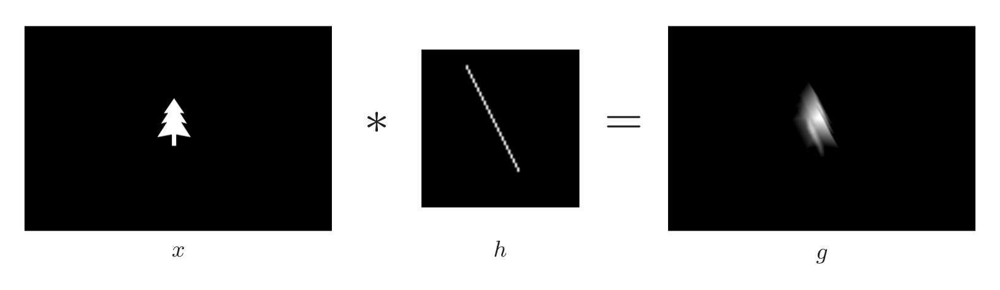
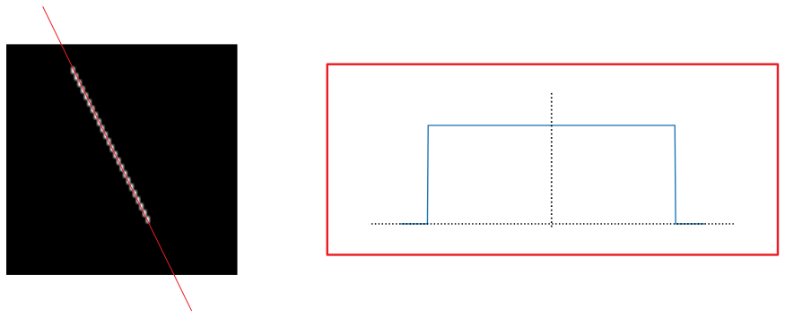
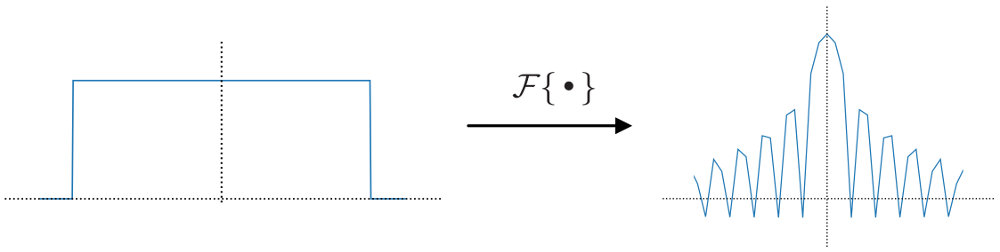
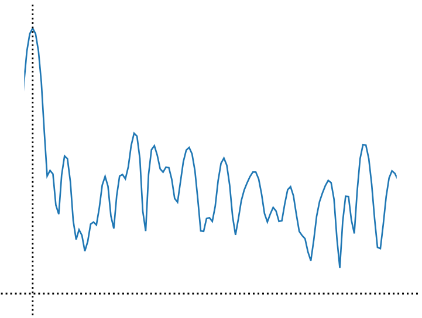
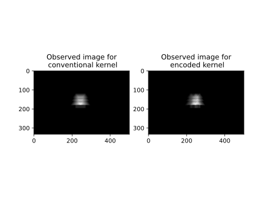
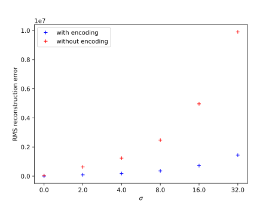

\(\begin{align} \newcommand{transp}{^\intercal} \newcommand{F}{\mathcal{F}} \newcommand{Fi}{\mathcal{F}^{-1}} \newcommand{inv}{^{-1}} \newcommand{stochvec}[1]{\mathbf{\tilde{#1}}} \newcommand{argmax}[1]{\underset{#1}{\mathrm{arg\, max}}\,} \newcommand{argmin}[1]{\underset{#1}{\mathrm{arg\, min}}\,} \end{align}\)
Computational Imaging
Coded Exposure Photography#
Content#
Introduction into coded exposure photography
Optical setup for coded exposure photography
Selection of encoding pattern
Reconstruction
Example
Introduction into coded exposure photography#
When photographing dynamic scenes, moving objects can cause so-called motion blur in the captured image depending on the exposure time of the camera.
When an object moves during exposure time, its image is smeared over an image region depending on its movement trajectory and its pixel values are blended with those of the stationary background.
The obvious way to mitigate or prevent motion blur is to reduce the exposure time and compensate the reduced light efficiency via:
increased digital amplification (at the cost of amplified noise) or
by providing sufficient artificial illumination (e.g., flashes).
In this chapter, we will explore a different approach to compensate motion blur that is based on deconvolution. The presented content is based on the paper Coded Exposure Photography: Motion Deblurring using Fluttered Shutter by Ramesh Raskar et al..
Image formation model for motion blur#
Assume that the observed scene consists of one object moving linearly along some direction with constant speed (can analogously be extended to multiple objects) in front of a black background (i.e., which reflects no light).
The corresponding image formation of the blurred observation \(g\) can be modeled via a convolution of the sought sharp image \(x\) of the object with the motion blur kernel \(h\) and some additive noise \(n\):
\(\begin{align} g = x*h + n \,. \end{align}\)
The motion blur kernel \(h\) then consists of a one-dimensional \(\mathrm{rect}\)-function with a width corresponding to the number of pixels that the image of the object moves on the image sensor during one exposure period. The orientation of the \(\mathrm{rect}\)-function corresponds to the direction of the linear movement.
Example#
The following shows a simple example of simulated motion blur:

The motion blur kernel \(h\) can be modeled as a rotated and translated \(\mathrm{rect}\)-function:

Directly trying to reconstruct the latent image \(x\) based on such an observation would lead to strong artifacts.
This can be seen explained in two ways:
The Fourier transform of the \(\mathrm{rect}(x)\)-function is given by \(\mathrm{sinc}(x)=\frac{\sin x}{x}\); see the following Figure for a visualization of its graph (logarithm of magnitude of Fourier transform):

The spectrum of the \(\mathrm{sinc}\)-function is not flat and has many zeros where information is inevitably lost. Inverting a such a deconvolution would strongly amplify certain frequencies (at the positions of the zeros) and hence might also amplify unwanted noise.
The autocorrelation of the \(\mathrm{rect}\)-function does not resemble a Dirac-like what is hindering for the reconstruction.
As a consequence, a better encoding strategy has to be found.
Optical setup for coded exposure photography#
In order to control the exposure modulation, an existing camera can be extended via a programmable shutter that is synchronized with the exposure control of the camera.
In the referenced paper, the authors use a programmable LCD as a spatial light modulator placed in front of the main lens of a digital lens reflex camera and simultaneously turn all pixels transparent or opaque to realize an encoding of the exposure.
The whole exposure period \(T\) of the camera can be divided into \(M\) time slices, so-called chops with duration \(T/M\).
During each chop, the LCD-based shutter is either set to transparent or opaque as stated in a corresponding pattern vector \(\mathbf{p}\in \left\{ 0,1 \right\}^M \)
Selection of encoding pattern \(\mathbf{p}\)#
When searching for an optimal code, two mutual criteria have to be optimized:
Invertibility (i.e., flat Fourier spectrum and as few zeros as possible),
light efficiency (i.e., many ones in \(\mathbf{p}\)).
One possibility to ensure light efficiency is to fix the ratio of ones and zeros in \(\mathbf{p}\) to \(1:1\).
For a given number \(M\) of chops, this design decision sets the set of possible encoding candidates which could be evaluated with respect to criterion 1 (invertibility) in a brute force manner.
This has been done by the authors of the referenced paper by means of a randomized linear search for \(M=52\).
The resulting encoding is \(\begin{align} \mathbf{p} = (1010000111000001010000110011110111010111001001100111)\transp \,. \end{align}\)
The logarithm of the magnitude of the spectrum of that code is shown below (for positive spatial frequencies):

Reconstruction#
The reconstruction can be performed with any suitable deconvolution method (Wiener filter, iterative methods, data-driven methods).
When applied in a practical scenario, there are two open points which have to be addressed:
The orientation of the encoding line in the motion blur kernel \(h\) has to be determined.
Different regions in the image can be affected by different types of motion blur, i.e., different directions, different movement velocities, no movement (e.g., background) and those regions can also be blended with each other.
Point 1 can be solved by prompting the user to estimate the movement direction and length (in pixels).
Both points can be addressed simultaneously by employing methods for locally estimating the blur PSF, i.e., with respect to the pixel position.
Example#
Consider again the following example image:
We simulate a horizontal motion blur by convolving with a 52 pixel width conventional \(\mathrm{rect}\)-like kernel and with kernel encoded according to the previously mentioned pattern:

For both images, we add Gaussian noise of different levels and try to reconstruct the undistorted image with a Wiener filter using the introduced heuristic for estimating the signal-to-noise ratio.
By this means, we achieve the following qualitative results:
interact(lambda i: showFig('figures/8/motion_deblur_results_',i,'.svg',800,50), i=widgets.IntSlider(min=(min_i:=0),max=(max_i:=5), step=1, value=(max_i if book else min_i)))
The results can be evaluated quantitatively by calculating the root mean squared reconstruction error with respect to the undistorted image:
